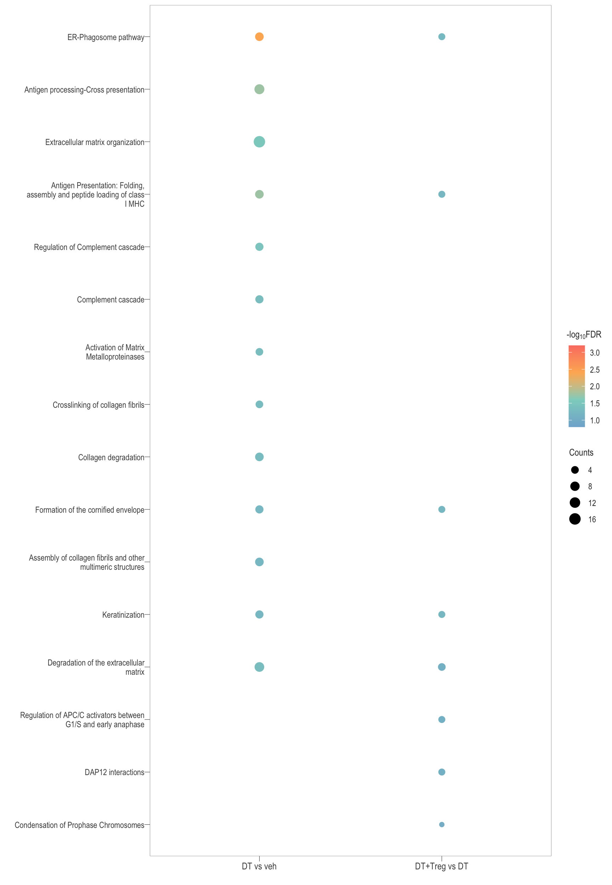

Reactome analysis
Ha M. Tran
05-02-2024
Last updated: 2024-02-08
Checks: 7 0
Knit directory: Treg_uNK/1_analysis/
This reproducible R Markdown analysis was created with workflowr (version 1.7.1). The Checks tab describes the reproducibility checks that were applied when the results were created. The Past versions tab lists the development history.
Great! Since the R Markdown file has been committed to the Git repository, you know the exact version of the code that produced these results.
Great job! The global environment was empty. Objects defined in the global environment can affect the analysis in your R Markdown file in unknown ways. For reproduciblity it’s best to always run the code in an empty environment.
The command set.seed(12345) was run prior to running the
code in the R Markdown file. Setting a seed ensures that any results
that rely on randomness, e.g. subsampling or permutations, are
reproducible.
Great job! Recording the operating system, R version, and package versions is critical for reproducibility.
Nice! There were no cached chunks for this analysis, so you can be confident that you successfully produced the results during this run.
Great job! Using relative paths to the files within your workflowr project makes it easier to run your code on other machines.
Great! You are using Git for version control. Tracking code development and connecting the code version to the results is critical for reproducibility.
The results in this page were generated with repository version 8da2e31. See the Past versions tab to see a history of the changes made to the R Markdown and HTML files.
Note that you need to be careful to ensure that all relevant files for
the analysis have been committed to Git prior to generating the results
(you can use wflow_publish or
wflow_git_commit). workflowr only checks the R Markdown
file, but you know if there are other scripts or data files that it
depends on. Below is the status of the Git repository when the results
were generated:
Ignored files:
Ignored: .Rhistory
Ignored: .Rproj.user/
Ignored: 2_plots/4_GSEA/
Untracked files:
Untracked: .gitignore
Untracked: 0_data/functions/compColour.rds
Untracked: 0_data/rawData/DTvsPBS_upstream regulators.xls
Untracked: 0_data/rawData/IPA Diseases and Functions.xlsx
Untracked: 0_data/rawData/IPA pathways.xlsx
Untracked: 0_data/rawData/IPA upstream regulators.xlsx
Untracked: 0_data/rawData/Treg vs DT_diseases and functions.xls
Untracked: 0_data/rawData/Treg vs DT_pathways.xls
Untracked: 0_data/rawData/Treg vs DT_upstream regulators.xls
Untracked: 0_data/rawData/Treg vs PBS_diseases and functions.xls
Untracked: 0_data/rawData/Treg vs PBS_pathways.xls
Untracked: 0_data/rawData/Treg vs PBS_upstream regulators.xls
Untracked: 0_data/rds_objects/disease_function_sig.rds
Untracked: 0_data/rds_objects/ipa_pathways.rds
Untracked: 0_data/rds_objects/upstream_sig.rds
Untracked: 0_data/rds_plots/
Untracked: 2_plots/2_DE/heat_DT vs veh.svg
Untracked: 2_plots/2_DE/heat_DT+Treg vs DT.svg
Untracked: 2_plots/2_DE/heat_DT+Treg vs veh.svg
Untracked: 2_plots/2_DE/hist_DT vs veh.svg
Untracked: 2_plots/2_DE/hist_DT+Treg vs DT.svg
Untracked: 2_plots/2_DE/hist_DT+Treg vs veh.svg
Untracked: 2_plots/2_DE/ma_DT vs veh.png
Untracked: 2_plots/2_DE/ma_DT+Treg vs DT.png
Untracked: 2_plots/2_DE/ma_DT+Treg vs veh.png
Untracked: 2_plots/2_DE/venn_2comp.png
Untracked: 2_plots/2_DE/venn_2comp.png.2024-02-02_16-30-41.893776.log
Untracked: 2_plots/2_DE/venn_2comp.png.2024-02-02_16-31-08.009748.log
Untracked: 2_plots/2_DE/vol_DT vs veh.png
Untracked: 2_plots/2_DE/vol_DT+Treg vs DT.png
Untracked: 2_plots/2_DE/vol_DT+Treg vs veh.png
Untracked: 2_plots/3_FA/go/dot_DT vs veh.svg
Untracked: 2_plots/3_FA/go/dot_DT+Treg vs DT.svg
Untracked: 2_plots/3_FA/go/dot_DT+Treg vs veh.svg
Untracked: 2_plots/3_FA/go/parTerm_dot_DT vs veh.svg
Untracked: 2_plots/3_FA/go/parTerm_dot_DT+Treg vs DT.svg
Untracked: 2_plots/3_FA/go/parTerm_dot_DT+Treg vs veh.svg
Untracked: 2_plots/3_FA/go/semSim_dendrogram_DT vs veh.svg
Untracked: 2_plots/3_FA/go/semSim_dendrogram_DT+Treg vs DT.svg
Untracked: 2_plots/3_FA/go/semSim_dendrogram_DT+Treg vs veh.svg
Untracked: 2_plots/3_FA/go/semSim_scatter_DT vs veh.svg
Untracked: 2_plots/3_FA/go/semSim_scatter_DT+Treg vs DT.svg
Untracked: 2_plots/3_FA/go/semSim_scatter_DT+Treg vs veh.svg
Untracked: 2_plots/3_FA/go/upset_DT vs veh.svg
Untracked: 2_plots/3_FA/go/upset_DT+Treg vs DT.svg
Untracked: 2_plots/3_FA/go/upset_DT+Treg vs veh.svg
Untracked: 2_plots/3_FA/ipa/
Untracked: 2_plots/3_FA/kegg/heat_Antigen processing and presentation.svg
Untracked: 2_plots/3_FA/kegg/heat_Epstein-Barr virus infection.svg
Untracked: 2_plots/3_FA/kegg/heat_Natural killer cell mediated cytotoxicity.svg
Untracked: 2_plots/3_FA/kegg/heat_Phagosome.svg
Untracked: 2_plots/3_FA/kegg/kegg_dot_DT vs veh.svg
Untracked: 2_plots/3_FA/kegg/kegg_dot_DT+Treg vs DT.svg
Untracked: 2_plots/3_FA/kegg/kegg_dot_DT+Treg vs veh.svg
Untracked: 2_plots/3_FA/kegg/kegg_upset_DT vs veh.svg
Untracked: 2_plots/3_FA/kegg/kegg_upset_DT+Treg vs DT.svg
Untracked: 2_plots/3_FA/kegg/kegg_upset_DT+Treg vs veh.svg
Untracked: 2_plots/3_FA/kegg/mmu04145.png
Untracked: 2_plots/3_FA/kegg/mmu04145.xml
Untracked: 2_plots/3_FA/kegg/mmu04612.png
Untracked: 2_plots/3_FA/kegg/mmu04612.xml
Untracked: 2_plots/3_FA/kegg/mmu04650.png
Untracked: 2_plots/3_FA/kegg/mmu04650.xml
Untracked: 2_plots/3_FA/kegg/mmu05169.png
Untracked: 2_plots/3_FA/kegg/mmu05169.xml
Untracked: 2_plots/3_FA/kegg/pv_mmu04145.png
Untracked: 2_plots/3_FA/kegg/pv_mmu04612.png
Untracked: 2_plots/3_FA/kegg/pv_mmu04650.png
Untracked: 2_plots/3_FA/kegg/pv_mmu05169.png
Untracked: 2_plots/3_FA/reactome/combine_react_dot.svg
Untracked: 2_plots/3_FA/reactome/react_dot_DT vs veh.svg
Untracked: 2_plots/3_FA/reactome/react_dot_DT+Treg vs DT.svg
Untracked: 2_plots/3_FA/reactome/react_dot_DT+Treg vs veh.svg
Untracked: 2_plots/3_FA/reactome/react_upset_DT vs veh.svg
Untracked: 2_plots/3_FA/reactome/react_upset_DT+Treg vs DT.svg
Untracked: 2_plots/3_FA/reactome/react_upset_DT+Treg vs veh.svg
Untracked: 2_plots/3_FA/reactome/venn_react.png
Unstaged changes:
Modified: 0_data/functions/bossTheme.rds
Modified: 0_data/functions/bossTheme_bar.rds
Modified: 0_data/functions/groupColour.rds
Modified: 0_data/functions/groupColour_dark.rds
Modified: 0_data/rds_objects/comp.rds
Modified: 0_data/rds_objects/dge.rds
Modified: 0_data/rds_objects/enrichGO.rds
Modified: 0_data/rds_objects/enrichGO_sig.rds
Modified: 0_data/rds_objects/enrichKEGG.rds
Modified: 0_data/rds_objects/enrichKEGG_all.rds
Modified: 0_data/rds_objects/enrichKEGG_sig.rds
Modified: 0_data/rds_objects/lm.rds
Modified: 0_data/rds_objects/lm_all.rds
Modified: 0_data/rds_objects/lm_sig.rds
Modified: 0_data/rds_objects/pathway_details.rds
Modified: 0_data/rds_objects/rawCount.rds
Modified: 0_data/rds_objects/reactome.rds
Modified: 0_data/rds_objects/reactome_all.rds
Modified: 0_data/rds_objects/reactome_sig.rds
Modified: 0_data/rds_objects/reducedTerms_all.rds
Modified: 0_data/rds_objects/reducedTerms_ora.rds
Modified: 0_data/rds_objects/reduced_semSim_df.rds
Modified: 0_data/rds_objects/scores_ora.rds
Modified: 0_data/rds_objects/semSim_df.rds
Modified: 0_data/rds_objects/simMatrix_ora.rds
Modified: 140_treg_uNK.Rproj
Modified: 1_analysis/_site.yml
Modified: 2_plots/1_QC/PC1_PC2.svg
Modified: 2_plots/1_QC/PC1_PC3.svg
Modified: 2_plots/1_QC/PC2_PC3.svg
Modified: 2_plots/1_QC/counts_after_filtering.svg
Modified: 2_plots/1_QC/counts_before_after_filtering.svg
Modified: 2_plots/1_QC/counts_before_filtering.svg
Modified: 2_plots/1_QC/library_size.svg
Deleted: 2_plots/2_DE/heat_DT vs PBS.svg
Deleted: 2_plots/2_DE/heat_Treg vs DT.svg
Deleted: 2_plots/2_DE/heat_Treg vs PBS.svg
Modified: 2_plots/2_DE/heat_combined.svg
Deleted: 2_plots/2_DE/hist_DT vs PBS.svg
Deleted: 2_plots/2_DE/hist_Treg vs DT.svg
Deleted: 2_plots/2_DE/hist_Treg vs PBS.svg
Deleted: 2_plots/2_DE/ma_DT vs PBS.png
Deleted: 2_plots/2_DE/ma_Treg vs DT.png
Deleted: 2_plots/2_DE/ma_Treg vs PBS.png
Modified: 2_plots/2_DE/venn.png
Deleted: 2_plots/2_DE/venn.png.2024-01-08_19-59-50.400111.log
Deleted: 2_plots/2_DE/vol_DT vs PBS.png
Deleted: 2_plots/2_DE/vol_Treg vs DT.png
Deleted: 2_plots/2_DE/vol_Treg vs PBS.png
Modified: 2_plots/3_FA/go/combine_go_dot.svg
Deleted: 2_plots/3_FA/go/dot_DT vs PBS.svg
Deleted: 2_plots/3_FA/go/dot_Treg vs DT.svg
Deleted: 2_plots/3_FA/go/dot_Treg vs PBS.svg
Modified: 2_plots/3_FA/go/parTerm_BP_venn.png
Modified: 2_plots/3_FA/go/parTerm_CC_venn.png
Modified: 2_plots/3_FA/go/parTerm_MF_venn.png
Deleted: 2_plots/3_FA/go/parTerm_dot_DT vs PBS.svg
Deleted: 2_plots/3_FA/go/parTerm_dot_Treg vs DT.svg
Deleted: 2_plots/3_FA/go/parTerm_dot_Treg vs PBS.svg
Modified: 2_plots/3_FA/go/parentTerm_all.svg
Deleted: 2_plots/3_FA/go/upset_DT vs PBS.svg
Deleted: 2_plots/3_FA/go/upset_Treg vs DT.svg
Deleted: 2_plots/3_FA/go/upset_Treg vs PBS.svg
Modified: 2_plots/3_FA/go/venn.png
Modified: 2_plots/3_FA/kegg/combine_kegg_dot.svg
Deleted: 2_plots/3_FA/kegg/heat_DT vs PBS_Antigen processing and presentation.svg
Deleted: 2_plots/3_FA/kegg/heat_DT vs PBS_Natural killer cell mediated cytotoxicity.svg
Deleted: 2_plots/3_FA/kegg/heat_DT vs PBS_Phagosome.svg
Deleted: 2_plots/3_FA/kegg/heat_DT vs PBS_Th1 and Th2 cell differentiation.svg
Deleted: 2_plots/3_FA/kegg/heat_Treg vs DT_Antigen processing and presentation.svg
Deleted: 2_plots/3_FA/kegg/heat_Treg vs DT_Natural killer cell mediated cytotoxicity.svg
Deleted: 2_plots/3_FA/kegg/heat_Treg vs DT_Phagosome.svg
Deleted: 2_plots/3_FA/kegg/heat_Treg vs DT_Th1 and Th2 cell differentiation.svg
Deleted: 2_plots/3_FA/kegg/heat_Treg vs PBS_Antigen processing and presentation.svg
Deleted: 2_plots/3_FA/kegg/heat_Treg vs PBS_Natural killer cell mediated cytotoxicity.svg
Deleted: 2_plots/3_FA/kegg/heat_Treg vs PBS_Phagosome.svg
Deleted: 2_plots/3_FA/kegg/heat_Treg vs PBS_Th1 and Th2 cell differentiation.svg
Deleted: 2_plots/3_FA/kegg/kegg_dot_DT vs PBS.svg
Deleted: 2_plots/3_FA/kegg/kegg_dot_Treg vs DT.svg
Deleted: 2_plots/3_FA/kegg/kegg_dot_Treg vs PBS.svg
Deleted: 2_plots/3_FA/kegg/kegg_upset_DT vs PBS.svg
Deleted: 2_plots/3_FA/kegg/kegg_upset_Treg vs DT.svg
Deleted: 2_plots/3_FA/kegg/kegg_upset_Treg vs PBS.svg
Modified: 2_plots/3_FA/kegg/venn.png
Deleted: 2_plots/3_FA/reactome/react_dot_DT vs PBS.svg
Deleted: 2_plots/3_FA/reactome/react_dot_Treg vs DT.svg
Deleted: 2_plots/3_FA/reactome/react_dot_Treg vs PBS.svg
Deleted: 2_plots/3_FA/reactome/react_upset_DT vs PBS.svg
Deleted: 2_plots/3_FA/reactome/react_upset_Treg vs DT.svg
Deleted: 2_plots/3_FA/reactome/react_upset_Treg vs PBS.svg
Modified: 2_plots/functionalHeat.svg
Modified: 3_output/GO_sig.xlsx
Modified: 3_output/KEGG_all.xlsx
Modified: 3_output/KEGG_sig.xlsx
Modified: 3_output/de_genes_all.xlsx
Modified: 3_output/de_genes_sig.xlsx
Modified: 3_output/reactome_all.xlsx
Modified: 3_output/reactome_sig.xlsx
Modified: functions.Rmd
Deleted: ipa.Rmd
Note that any generated files, e.g. HTML, png, CSS, etc., are not included in this status report because it is ok for generated content to have uncommitted changes.
These are the previous versions of the repository in which changes were
made to the R Markdown (1_analysis/reactome.Rmd) and HTML
(docs/reactome.html) files. If you’ve configured a remote
Git repository (see ?wflow_git_remote), click on the
hyperlinks in the table below to view the files as they were in that
past version.
| File | Version | Author | Date | Message |
|---|---|---|---|---|
| Rmd | 8da2e31 | tranmanhha135 | 2024-02-08 | workflowr::wflow_publish(here::here("1_analysis/*.Rmd")) |
| html | d8d23ee | tranmanhha135 | 2024-01-13 | im on holiday |
| html | 36aeb85 | Ha Manh Tran | 2024-01-13 | Build site. |
| Rmd | a957cff | Ha Manh Tran | 2024-01-13 | workflowr::wflow_publish(here::here("1_analysis/*Rmd")) |
| Rmd | c78dfac | tranmanhha135 | 2024-01-12 | remote from ipad |
| Rmd | 221e2fa | tranmanhha135 | 2024-01-10 | fixed error |
| Rmd | 7d64f82 | tranmanhha135 | 2024-01-09 | completed ORA GO |
| Rmd | 05fa0b3 | tranmanhha135 | 2024-01-06 | added description |
# working with data
library(dplyr)
library(magrittr)
library(readr)
library(tibble)
library(reshape2)
library(tidyverse)
library(VennDiagram)
# Visualisation:
library(kableExtra)
library(ggplot2)
library(grid)
library(pander)
library(cowplot)
library(pheatmap)
library(DT)
library(extrafont)
# Custom ggplot
library(ggbiplot)
library(ggrepel)
# Bioconductor packages:
library(edgeR)
library(limma)
library(Glimma)
library(clusterProfiler)
library(org.Mm.eg.db)
library(enrichplot)
library(ReactomePA)
library(pandoc)
library(knitr)
opts_knit$set(progress = FALSE, verbose = FALSE)
opts_chunk$set(warning=FALSE, message=FALSE, echo=FALSE)Reactome
Reactome database provides curated information about biological pathways, including molecular events and reactions within cells. It focuses on human biology and is widely used for pathway analysis and functional interpretation of high-throughput data.
KEGG and Reactome both include approximately the same number of genes. The difference lies in KEGG’s use of broader terms, while Reactome employs similar terms but with multiple detailed entries.
In the Reactome database, terms are organized hierarchically based on the classification of biological pathways. The organization follows a tree-like structure, where terms represent different levels of granularity in understanding molecular events and reactions within cells
Visualisation
The following visualisations are Reactome enrichment analysis performed with set of DE genes significantly below FDR < 0.1 without FC threshold (TREAT). IMPORTANTLY, these Reactome terms are significantly enriched with FDR < 0.1.
Dot plot: illustrates the top enriched Reactome pathways
- \(Gene ratio =\) the number of significant DE gene in the term / the total of number of genes in the term as indicated by the size
Table: list of all the significant Reactome pathways
- NOTE: To keep this a readable table, the full pathway description were removed, check the exported Excel spreadsheet for full details on pathways class, descriptions, related pathways, and references
Upset: illustrate the overlap of gene between different pathways
I recommend reading through the full list of significant Reactome pathways and selecting the most biologically relevant for better visualisation
The following visualisations are Reactome enrichment analysis performed with set of DE genes significantly below FDR < 0.1 without FC threshold (TREAT). IMPORTANTLY, significant Reactome pathways are significantly if FDR < 0.1
Dot plot: illustrates the enriched Reactome pathways
- \(Gene ratio =\) the number of significant DE gene in the term / the total of number of genes in the term as indicated by the size
Table: list of all the significant Reactome pathways
Upset: illustrate the overlap of gene between different pathways
I recommend reading through the full list of significant Reactome pathways and selecting the most biologically relevant for more in-depth visualisation
DT vs veh

Table
DT+Treg vs veh
Table
DT+Treg vs DT
Table
Combined
Venn diagram

Dot plot

Export Data
The following are exported:
reactome_all.xlsx - This spreadsheet contains all Reactome pathways
reactome_sig.xlsx - This spreadsheet contains all significant (FDR < 0.1) Reactome pathways
R version 4.3.2 (2023-10-31)
Platform: x86_64-pc-linux-gnu (64-bit)
Running under: Ubuntu 22.04.3 LTS
Matrix products: default
BLAS: /usr/lib/x86_64-linux-gnu/blas/libblas.so.3.10.0
LAPACK: /usr/lib/x86_64-linux-gnu/lapack/liblapack.so.3.10.0
locale:
[1] LC_CTYPE=en_AU.UTF-8 LC_NUMERIC=C
[3] LC_TIME=en_AU.UTF-8 LC_COLLATE=en_AU.UTF-8
[5] LC_MONETARY=en_AU.UTF-8 LC_MESSAGES=en_AU.UTF-8
[7] LC_PAPER=en_AU.UTF-8 LC_NAME=C
[9] LC_ADDRESS=C LC_TELEPHONE=C
[11] LC_MEASUREMENT=en_AU.UTF-8 LC_IDENTIFICATION=C
time zone: Australia/Adelaide
tzcode source: system (glibc)
attached base packages:
[1] stats4 grid stats graphics grDevices utils datasets
[8] methods base
other attached packages:
[1] knitr_1.45 pandoc_0.2.0 ReactomePA_1.44.0
[4] enrichplot_1.20.3 org.Mm.eg.db_3.17.0 AnnotationDbi_1.62.2
[7] IRanges_2.34.1 S4Vectors_0.38.2 Biobase_2.60.0
[10] BiocGenerics_0.46.0 clusterProfiler_4.8.3 Glimma_2.10.0
[13] edgeR_3.42.4 limma_3.56.2 ggrepel_0.9.4
[16] ggbiplot_0.55 scales_1.3.0 plyr_1.8.9
[19] extrafont_0.19 DT_0.31 pheatmap_1.0.12
[22] cowplot_1.1.2 pander_0.6.5 kableExtra_1.3.4
[25] VennDiagram_1.7.3 futile.logger_1.4.3 lubridate_1.9.3
[28] forcats_1.0.0 stringr_1.5.1 purrr_1.0.2
[31] tidyr_1.3.0 ggplot2_3.4.4 tidyverse_2.0.0
[34] reshape2_1.4.4 tibble_3.2.1 readr_2.1.4
[37] magrittr_2.0.3 dplyr_1.1.4
loaded via a namespace (and not attached):
[1] splines_4.3.2 later_1.3.2
[3] bitops_1.0-7 ggplotify_0.1.2
[5] polyclip_1.10-6 graph_1.78.0
[7] lifecycle_1.0.4 rprojroot_2.0.4
[9] lattice_0.22-5 MASS_7.3-60
[11] crosstalk_1.2.1 sass_0.4.8
[13] rmarkdown_2.25 jquerylib_0.1.4
[15] yaml_2.3.8 httpuv_1.6.13
[17] DBI_1.2.0 RColorBrewer_1.1-3
[19] abind_1.4-5 zlibbioc_1.46.0
[21] rvest_1.0.3 GenomicRanges_1.52.1
[23] ggraph_2.1.0 RCurl_1.98-1.13
[25] yulab.utils_0.1.2 rappdirs_0.3.3
[27] tweenr_2.0.2 git2r_0.33.0
[29] GenomeInfoDbData_1.2.10 tidytree_0.4.6
[31] reactome.db_1.84.0 svglite_2.1.3
[33] codetools_0.2-19 DelayedArray_0.26.7
[35] DOSE_3.26.2 xml2_1.3.6
[37] ggforce_0.4.1 tidyselect_1.2.0
[39] aplot_0.2.2 farver_2.1.1
[41] viridis_0.6.4 matrixStats_1.2.0
[43] webshot_0.5.5 jsonlite_1.8.8
[45] ellipsis_0.3.2 tidygraph_1.3.0
[47] systemfonts_1.0.5 tools_4.3.2
[49] ragg_1.2.7 treeio_1.24.3
[51] Rcpp_1.0.11 glue_1.6.2
[53] gridExtra_2.3 Rttf2pt1_1.3.12
[55] here_1.0.1 xfun_0.41
[57] DESeq2_1.40.2 qvalue_2.32.0
[59] MatrixGenerics_1.12.3 GenomeInfoDb_1.36.4
[61] withr_2.5.2 formatR_1.14
[63] fastmap_1.1.1 fansi_1.0.6
[65] digest_0.6.33 timechange_0.2.0
[67] R6_2.5.1 gridGraphics_0.5-1
[69] textshaping_0.3.7 colorspace_2.1-0
[71] GO.db_3.17.0 RSQLite_2.3.4
[73] utf8_1.2.4 generics_0.1.3
[75] data.table_1.14.10 graphlayouts_1.0.2
[77] httr_1.4.7 htmlwidgets_1.6.4
[79] S4Arrays_1.0.6 scatterpie_0.2.1
[81] graphite_1.46.0 whisker_0.4.1
[83] pkgconfig_2.0.3 gtable_0.3.4
[85] blob_1.2.4 workflowr_1.7.1
[87] XVector_0.40.0 shadowtext_0.1.2
[89] htmltools_0.5.7 fgsea_1.26.0
[91] ggupset_0.3.0 png_0.1-8
[93] ggfun_0.1.3 lambda.r_1.2.4
[95] rstudioapi_0.15.0 tzdb_0.4.0
[97] nlme_3.1-163 cachem_1.0.8
[99] parallel_4.3.2 HDO.db_0.99.1
[101] pillar_1.9.0 vctrs_0.6.5
[103] promises_1.2.1 extrafontdb_1.0
[105] evaluate_0.23 cli_3.6.2
[107] locfit_1.5-9.8 compiler_4.3.2
[109] futile.options_1.0.1 rlang_1.1.2
[111] crayon_1.5.2 labeling_0.4.3
[113] fs_1.6.3 writexl_1.4.2
[115] stringi_1.8.3 viridisLite_0.4.2
[117] BiocParallel_1.34.2 munsell_0.5.0
[119] Biostrings_2.68.1 lazyeval_0.2.2
[121] GOSemSim_2.26.1 Matrix_1.6-3
[123] hms_1.1.3 patchwork_1.1.3
[125] bit64_4.0.5 KEGGREST_1.40.1
[127] highr_0.10 SummarizedExperiment_1.30.2
[129] igraph_1.6.0 memoise_2.0.1
[131] bslib_0.6.1 ggtree_3.8.2
[133] fastmatch_1.1-4 bit_4.0.5
[135] downloader_0.4 gson_0.1.0
[137] ape_5.7-1